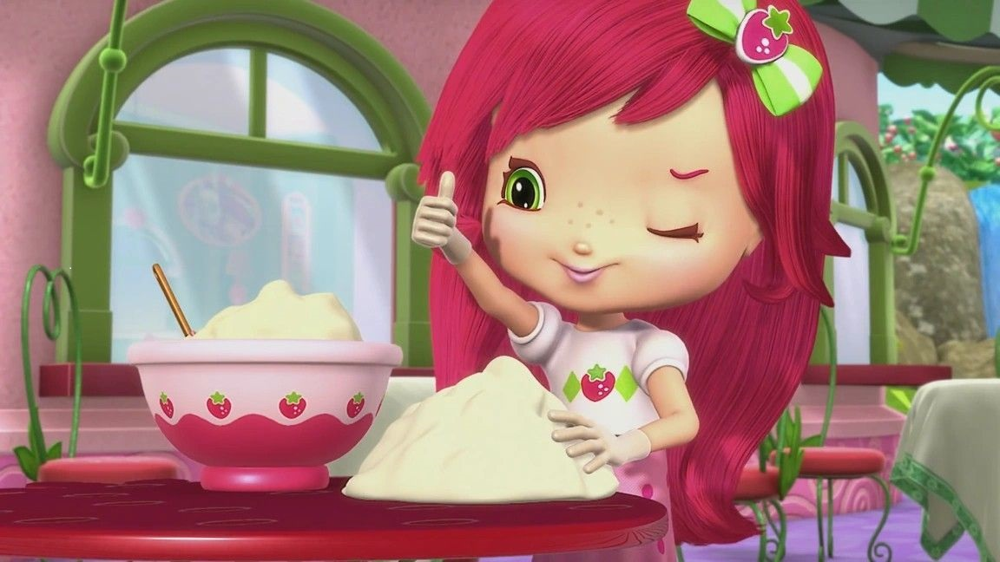
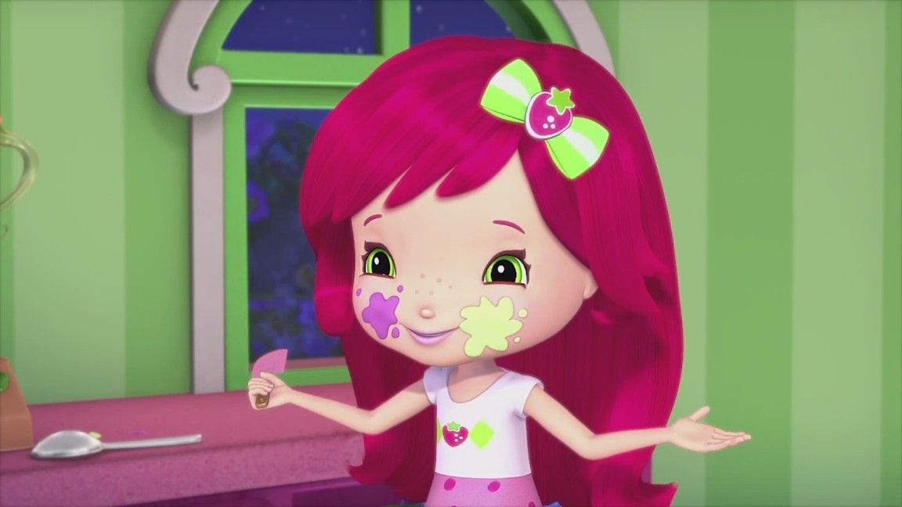

Rosita Fresita 🍓



🎬 Video de presentación
🍰🍓 Sobre Rosita Fresita:
Rosita Fresita es una niña dulce, creativa y alegre que vive en Fresilandia. Siempre busca ayudar a sus amigos y cuidar la naturaleza.
Su energía positiva y su amor por las fresas hacen que cada día sea una nueva aventura llena de color y amistad.
✨ Características:
- Su estilo se basa en una fresa.
- Tiene una Cafetería.
- Tiene amigos berrikings.
🔗 Más información:
Ver en Wikipedia